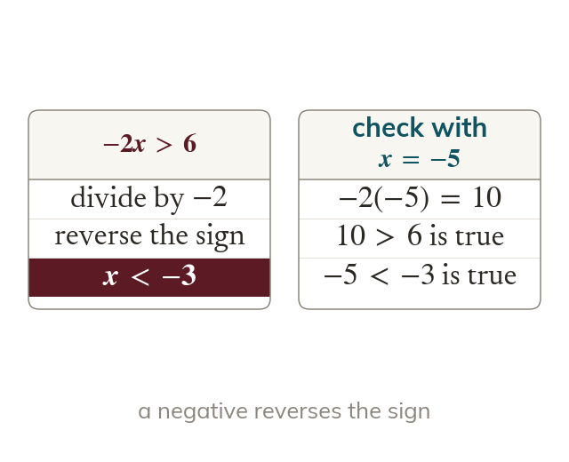

The sign reverses
Multiplying or dividing by a negative reverses the inequality sign. Checking one number shows whether the answer is right.
Solving an inequality is like solving an equation, except that multiplying or dividing by a negative number reverses the inequality sign. A check with one number shows whether the final answer is right.